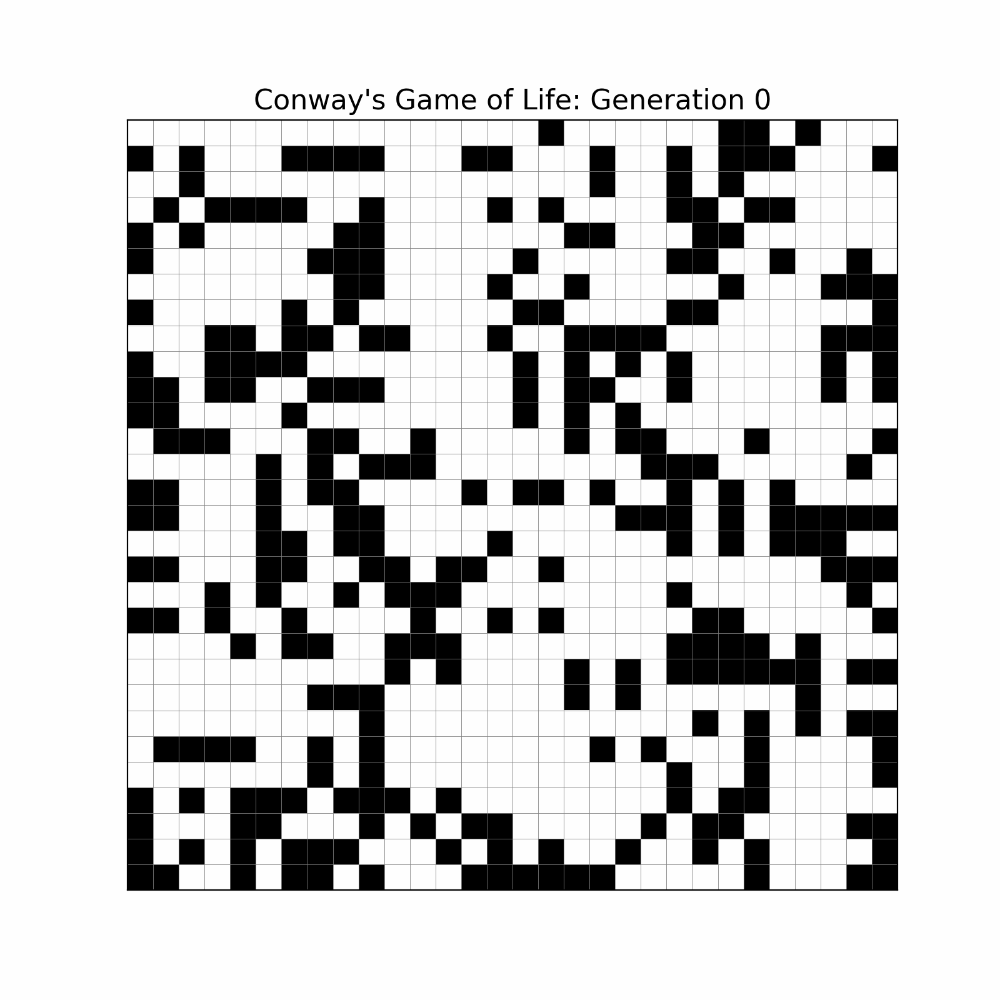
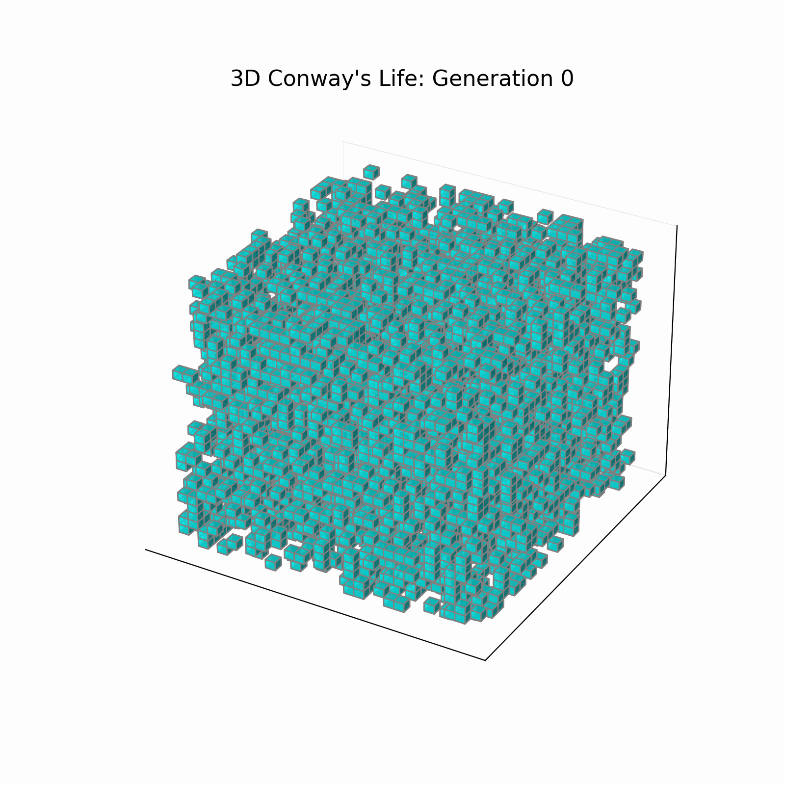

- Generated by
 1.9.8
1.9.8
|
MPI-Algorithms
|
This project is a high-performance computing (HPC) and parallel algorithms library built with modern C++20 and OpenMPI. The core repository provides a robust implementation of the non-blocking Bruck All-to-all communication algorithm inbruck.hpp, alongside comprehensive benchmarking against the standard MPI_Alltoall. Furthermore, it features a custom Cartesian topology framework used to simulate both 2D (conway2D.cc) and 3D (conway3D.cc) parallel Conway's Game of Life.
mpi_algorithm::Bruck_Alltoall_noneblocking using bitwise shift calculations, MPI_Isend, and MPI_Irecv.conway2D.cc Utilizes standard Game of Life rules (Survival: 2-3 neighbors, Reproduction: exactly 3 neighbors) over a distributed 2D grid.conway3D.cc Extends to 3D space applying the Carter Bays 4555 rule (Survival: 4-5 neighbors, Reproduction: exactly 5 neighbors).mpi_array::array_cartesian container. It manages local/global array shapes multi_array::multi_array_shape and supports automated MPI datatype creation for blocking (MPI_Sendrecv) and non-blocking halo exchanges.MPI_File_write_all via MPI-IO and custom subarrays, enabling fast dumps of Cartesian data grids to disk.multi_array::array) with multi-index access, compile-time C++ to MPI datatype deduction mapping, and a C++20 span-compatible random number generator array_randomizer.The project uses CMake as its build system. Compilation definitions such as grid dimensions and data types can be overridden via CMake cache variables:
Note: Valid DATA_TYPE options include uint8_t, uint16_t, int, float, double, and long as explicitly instantiated in the MPI-IO module.
Once compiled, three executables are generated:
bruck_Alltoall**: Runs the benchmark comparing the custom Bruck algorithm against the standard MPI_Alltoall.conways-game-2D**: Simulates the 2D Game of Life for 200 generations.
conways-game-3D**: Simulates the 3D Game of Life for 100 generations.
The repository includes Bash scripts to automate compilation, execution, and performance data extraction (saved to CSV files) across varying problem sizes and process counts:
benchmark_bruck2D.sh & benchmark_bruck3D.sh: the Bruck collective communication time.benchmark_conways2D.sh: Benchmarks the total execution time of the 2D Game of Life evolution.Execute Doxygen in the root directory to generate HTML and LaTeX documentation: